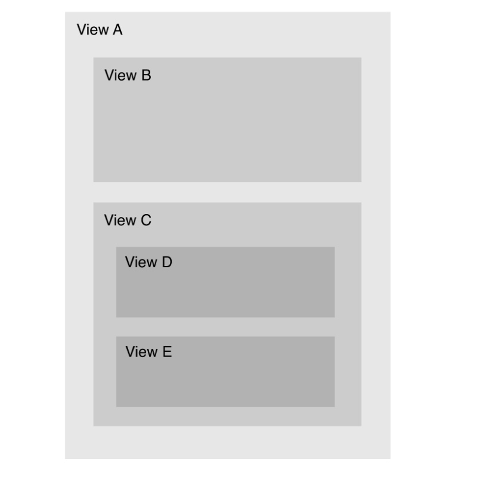
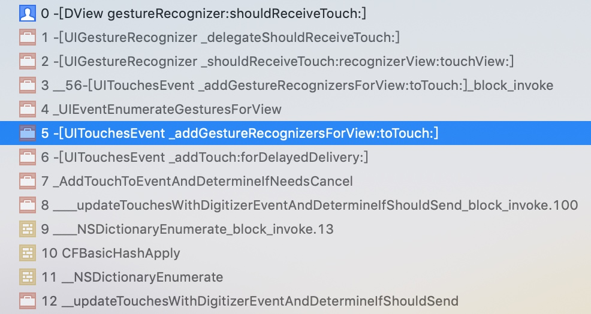
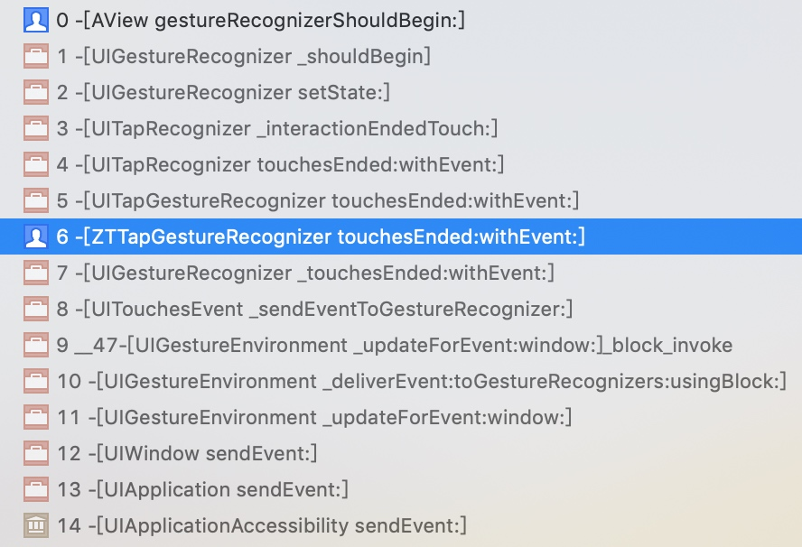
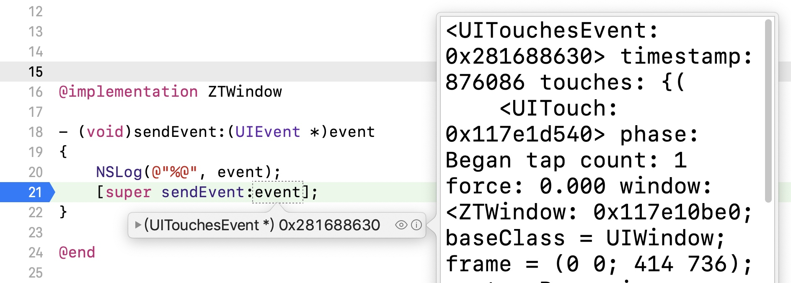
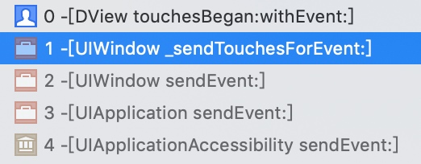
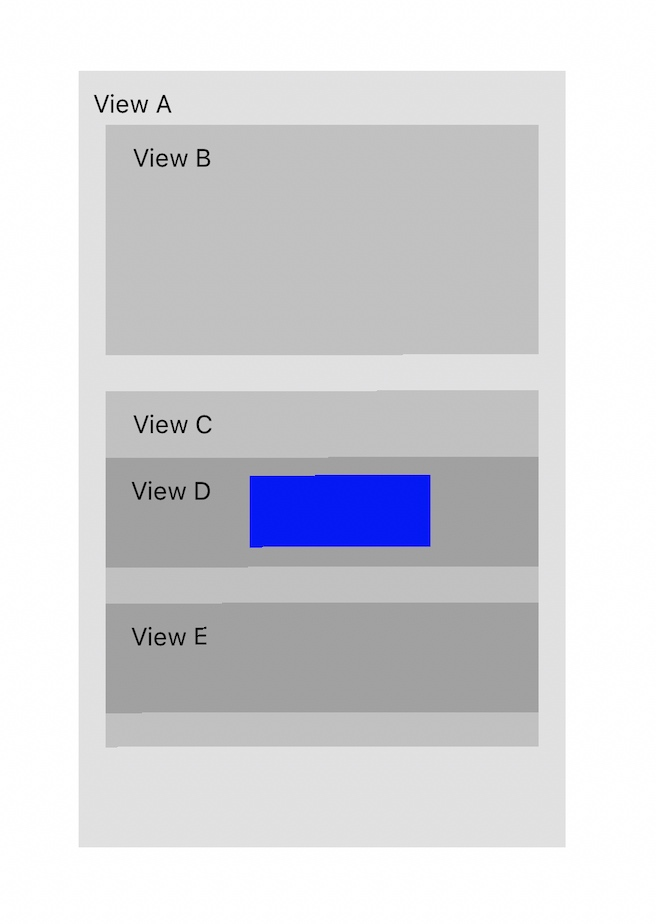

# 深入理解 iOS 事件机制
原文来自掘金
前言
这篇文章始于一个需求：我们在 SDK 提供的某个 View 的 Subview 中实现了单击双击等多个 Gesture Recognizer，而客户希望自己在这个 View 上的单击手势不会冲突，同时没有延迟。
借此机会，我们来重温下 iOS 的事件机制和手势冲突，重点介绍下 UIGestureRecognizer 之间以及与原生触摸事件的相互关系。
事件的生命周期
当指尖触碰屏幕时，一个触摸事件就在系统中生成了。经过 IPC 进程间通信，事件最终被传递到了合适的应用。在应用内历经峰回路转的奇幻之旅后，最终被释放。大致经过如下图：

系统响应阶段
手指触碰屏幕，屏幕感应到触碰后，将事件交由 IOKit 处理。
IOKit 将触摸事件封装成一个 IOHIDEvent 对象，并通过 mach port 传递给 SpringBoard 进程。
mach port 进程端口，各进程之间通过它进行通信。
SpringBoad.app 是一个系统进程，可以理解为桌面系统，可以统一管理和分发系统接收到的触摸事件。
- SpringBoard 进程因接收到触摸事件，触发了主线程 runloop 的 source1 事件源的回调。此时 SpringBoard 会根据当前桌面的状态，判断应该由谁处理此次触摸事件。因为事件发生时，你可能正在桌面上翻页，也可能正在刷微博。若是前者（即前台无 APP 运行），则触发 SpringBoard 本身主线程 runloop 的 source0 事件源的回调，将事件交由桌面系统去消耗；若是后者（即有 APP 正在前台运行），则将触摸事件通过 IPC 传递给前台 APP 进程，接下来的事情便是 APP 内部对于触摸事件的响应了。
APP响应阶段
APP 进程的 mach port 接受到 SpringBoard 进程传递来的触摸事件，主线程的 runloop 被唤醒，触发了 source1 回调。
source1 回调又触发了一个 source0 回调，将接收到的 IOHIDEvent 对象封装成 UIEvent 对象，此时 APP 将正式开始对于触摸事件的响应。
source0 回调内部将触摸事件添加到 UIApplication 对象的事件队列中。事件出队后，UIApplication 开始一个寻找最佳响应者的过程，这个过程又称 Hit-Testing，细节将在下一节阐述。另外，此处开始便是与我们平时开发相关的工作了。
寻找到最佳响应者后，接下来的事情便是事件在响应链中的传递及响应了。事实上，事件除了被响应者消耗，还能被手势识别器或是 Target-Action 模式捕捉并消耗掉。其中涉及对触摸事件的响应优先级。
触摸事件历经坎坷后要么被某个响应对象捕获后释放，要么至死也没能找到能够响应的对象，最终释放。至此，这个触摸事件的使命就算终结了。runloop 若没有其他事件需要处理，也将重归于眠，等待新的事件到来后唤醒。
探测链与响应链
Hit-Testing
从逻辑上来说，探测链是最先发生的机制，当触摸事件发生后，iOS 系统根据 Hit-Testing 来确定触摸事件发生在哪个视图对象上。其中主要用到了两个 UIView 中的方法：
// recursively calls -pointInside:withEvent:. point is in the receiver's coordinate system
- (nullable UIView *)hitTest:(CGPoint)point withEvent:(nullable UIEvent *)event;
// default returns YES if point is in bounds
- (BOOL)pointInside:(CGPoint)point withEvent:(nullable UIEvent *)event;
复制代码
前者会通过递归调用后者来返回一个适合响应触摸事件的视图，下面这张图描述了这个过程：

Responder Chain
Hit-Testing 找到的视图拥有最先对触摸事件进行处理的机会，如果该视图无法处理这个事件，那么事件对象就会沿着响应器的视图链向上传递，直到找到可以处理该事件的对象为止。下面这张图描述了这个过程：

Demo 验证
接下来我们通过官方文档的 Demo 以代码的方式来进行验证：

对于每个 View，我们重载父类的方法：
- (UIView *)hitTest:(CGPoint)point withEvent:(UIEvent *)event
{
NSLog(@"进入A_View---hitTest withEvent ---");
UIView * view = [super hitTest:point withEvent:event];
NSLog(@"离开A_View--- hitTest withEvent ---hitTestView:%@",view);
return view;
}
- (BOOL)pointInside:(CGPoint)point withEvent:(nullable UIEvent *)event
{
NSLog(@"A_view--- pointInside withEvent ---");
BOOL isInside = [super pointInside:point withEvent:event];
NSLog(@"A_view--- pointInside withEvent --- isInside:%d",isInside);
return isInside;
}
- (void)touchesBegan:(NSSet *)touches withEvent:(UIEvent *)event
{
NSLog(@"A_touchesBegan");
[super touchesBegan:touches withEvent:event];
}
- (void)touchesMoved:(NSSet<UITouch *> *)touches withEvent:(nullable UIEvent *)event
{
NSLog(@"A_touchesMoved");
[super touchesMoved:touches withEvent:event];
}
- (void)touchesEnded:(NSSet<UITouch *> *)touches withEvent:(nullable UIEvent *)event
{
NSLog(@"A_touchesEnded");
[super touchesEnded:touches withEvent:event];
}
-(void)touchesCancelled:(NSSet<UITouch *> *)touches withEvent:(UIEvent *)event
{
NSLog(@"A_touchesCancelled");
[super touchesCancelled:touches withEvent:event];
}
复制代码
点击 View D，log 显示如下，这与探测链与响应链的机制的描述相同。
进入A_View---hitTest withEvent ---
A_view--- pointInside withEvent ---
A_view--- pointInside withEvent --- isInside:1
进入C_View---hitTest withEvent ---
C_view---pointInside withEvent ---
C_view---pointInside withEvent --- isInside:1
进入E_View---hitTest withEvent ---
E_view---pointInside withEvent ---
E_view---pointInside withEvent --- isInside:0
离开E_View---hitTest withEvent ---hitTestView:(null)
进入D_View---hitTest withEvent ---
D_view---pointInside withEvent ---
D_view---pointInside withEvent --- isInside:1
离开D_View---hitTest withEvent ---hitTestView:<DView: 0x12dd11e50; frame = (0 37; 240 61); autoresize = RM+BM; layer = <CALayer: 0x283f87b40>>
离开C_View---hitTest withEvent ---hitTestView:<DView: 0x12dd11e50; frame = (0 37; 240 61); autoresize = RM+BM; layer = <CALayer: 0x283f87b40>>
离开A_View--- hitTest withEvent ---hitTestView:<DView: 0x12dd11e50; frame = (0 37; 240 61); autoresize = RM+BM; layer = <CALayer: 0x283f87b40>>
进入A_View---hitTest withEvent ---
A_view--- pointInside withEvent ---
A_view--- pointInside withEvent --- isInside:1
进入C_View---hitTest withEvent ---
C_view---pointInside withEvent ---
C_view---pointInside withEvent --- isInside:1
进入E_View---hitTest withEvent ---
E_view---pointInside withEvent ---
E_view---pointInside withEvent --- isInside:0
离开E_View---hitTest withEvent ---hitTestView:(null)
进入D_View---hitTest withEvent ---
D_view---pointInside withEvent ---
D_view---pointInside withEvent --- isInside:1
离开D_View---hitTest withEvent ---hitTestView:<DView: 0x12dd11e50; frame = (0 37; 240 61); autoresize = RM+BM; layer = <CALayer: 0x283f87b40>>
离开C_View---hitTest withEvent ---hitTestView:<DView: 0x12dd11e50; frame = (0 37; 240 61); autoresize = RM+BM; layer = <CALayer: 0x283f87b40>>
离开A_View--- hitTest withEvent ---hitTestView:<DView: 0x12dd11e50; frame = (0 37; 240 61); autoresize = RM+BM; layer = <CALayer: 0x283f87b40>>
D_touchesBegan
C_touchesBegan
A_touchesBegan
D_touchesEnded
C_touchesEnded
A_touchesEnded
复制代码
（这里其实 Hit-Testing 进行了两次，关于这个问题，苹果官方有相应的回复）
Yes, it’s normal. The system may tweak the point being hit tested between the calls. Since hitTest should be a pure function with no side-effects, this should be fine.
小结
1. 系统通过 hitTest:withEvent: 方法沿视图层级树从底向上（从根视图开始）从后向前（从逻辑上更靠近屏幕的视图开始）进行遍历，最终返回一个适合响应触摸事件的 View。
2. 原生触摸事件从 Hit-Testing 返回的 View 开始，沿着响应链从上向下进行传递。
探测链与响应链的机制总体比较清晰，不再赘述，但熟悉这两个机制并不能帮我们解决任何问题，接下来我们继续深入探究下手势识别器。
手势识别器
我们首先思考一个问题，对于官方文档里的 Demo，我们在每个 View 上添加一个 UITapGestureRecognizer，当点击 View D 时，UITapGestureRecognizer 之间的响应顺序是什么样的，哪个 View 上的 UITapGestureRecognizer 又会最终响应这个事件？
官方文档
我们先来看看官方文档是怎么说的：
When a view has multiple gesture recognizers attached to it, you may want to alter how the competing gesture recognizers receive and analyze touch events. By default, there is no set order for which gesture recognizers receive a touch first, and for this reason touches can be passed to gesture recognizers in a different order each time. You can override this default behavior to:
Specify that one gesture recognizer should analyze a touch before another gesture recognizer.
Allow two gesture recognizers to operate simultaneously.
Prevent a gesture recognizer from analyzing a touch.
Use the UIGestureRecognizer class methods, delegate methods, and methods overridden by subclasses to effect these behaviors.
根据文档的说法，当触摸事件发生时，哪个 UIGestureRecognizer 先收到这个事件并没有固定的顺序，并且文档建议我们使用 UIGestureRecognizer 提供的方法来控制它们之间的顺序和相互关系。
UIGestureRecognizer Methods
所以我们依次看下系统的 UIGestureRecognizer 都提供了哪些与它们之间相互关系有关的方法：
// create a relationship with another gesture recognizer that will prevent this gesture's actions from being called until otherGestureRecognizer transitions to UIGestureRecognizerStateFailed
// if otherGestureRecognizer transitions to UIGestureRecognizerStateRecognized or UIGestureRecognizerStateBegan then this recognizer will instead transition to UIGestureRecognizerStateFailed
// example usage: a single tap may require a double tap to fail
- (void)requireGestureRecognizerToFail:(UIGestureRecognizer *)otherGestureRecognizer;
// called once per attempt to recognize, so failure requirements can be determined lazily and may be set up between recognizers across view hierarchies
// return YES to set up a dynamic failure requirement between gestureRecognizer and otherGestureRecognizer
//
// note: returning YES is guaranteed to set up the failure requirement. returning NO does not guarantee that there will not be a failure requirement as the other gesture's counterpart delegate or subclass methods may return YES
- (BOOL)gestureRecognizer:(UIGestureRecognizer *)gestureRecognizer shouldRequireFailureOfGestureRecognizer:(UIGestureRecognizer *)otherGestureRecognizer NS_AVAILABLE_IOS(7_0);
- (BOOL)gestureRecognizer:(UIGestureRecognizer *)gestureRecognizer shouldBeRequiredToFailByGestureRecognizer:(UIGestureRecognizer *)otherGestureRecognizer NS_AVAILABLE_IOS(7_0);
复制代码
这三个方法比较常用，它们可以指定 UIGestureRecognizer 之间的依赖关系，区别在于第一个一般适用于在同一个 View 中创建的多个 UIGestureRecognizer 的场景，当 View 层级比较复杂或者 UIGestureRecognizer 处于 Framework 内部时可以用后两个方法动态指定。
// called when the recognition of one of gestureRecognizer or otherGestureRecognizer would be blocked by the other
// return YES to allow both to recognize simultaneously. the default implementation returns NO (by default no two gestures can be recognized simultaneously)
//
// note: returning YES is guaranteed to allow simultaneous recognition. returning NO is not guaranteed to prevent simultaneous recognition, as the other gesture's delegate may return YES
- (BOOL)gestureRecognizer:(UIGestureRecognizer *)gestureRecognizer shouldRecognizeSimultaneouslyWithGestureRecognizer:(UIGestureRecognizer *)otherGestureRecognizer;
复制代码
这个方法可以控制两个 UIGestureRecognizer 之间是否可以同时异步进行，需要注意的是，假设存在两个可能会互相 block 的 UIGestureRecognizer，系统会分别对它们的 delegate 调用这个方法，只要有一个返回 YES，那么这两个 UIGestureRecognizer 就可以同时进行识别，这与 shouldRequireFailureOfGestureRecognizer 是类似的。
// called before touchesBegan:withEvent: is called on the gesture recognizer for a new touch. return NO to prevent the gesture recognizer from seeing this touch
- (BOOL)gestureRecognizer:(UIGestureRecognizer *)gestureRecognizer shouldReceiveTouch:(UITouch *)touch;
// called when a gesture recognizer attempts to transition out of UIGestureRecognizerStatePossible. returning NO causes it to transition to UIGestureRecognizerStateFailed
- (BOOL)gestureRecognizerShouldBegin:(UIGestureRecognizer *)gestureRecognizer;
复制代码
这两个方法都是用来禁止 UIGestureRecognizer 响应触摸事件的，区别在于，当触摸事件发生时，使用第一个方法可以立即控制 UIGestureRecognizer 是否对其处理，且不会修改 UIGestureRecognizer 的状态机（因为在调用自身的 touchesBegan:withEvent: 之前，详见下），而第二个方法会等待一段时间，在 UIGestureRecognizer 识别手势转换状态时调用，返回 NO 会改变其状态机，使其 state 变为 UIGestureRecognizerStateFailed。
我们看下官方文档对这两个方法的说明：
When a touch begins, if you can immediately determine whether or not your gesture recognizer should consider that touch, use thegestureRecognizer:shouldReceiveTouch: method. This method is called every time there is a new touch. Returning NO prevents the gesture recognizer from being notified that a touch occurred. The default value is YES. This method does not alter the state of the gesture recognizer.
If you need to wait as long as possible before deciding whether or not a gesture recognizer should analyze a touch, use thegestureRecognizerShouldBegin: delegate method. Generally, you use this method if you have a UIView or UIControl subclass with custom touch-event handling that competes with a gesture recognizer. Returning NO causes the gesture recognizer to immediately fail, which allows the other touch handling to proceed. This method is called when a gesture recognizer attempts to transition out of the Possible state, if the gesture recognition would prevent a view or control from receiving a touch.
You can use the gestureRecognizerShouldBegin:UIView method if your view or view controller cannot be the gesture recognizer’s delegate. The method signature and implementation is the same.
第二段介绍了通常情况下，当我们的子类 UIView 或 UIControl 有和 UIGestureRecognizer 冲突的自定义触摸事件时，可以使用 gestureRecognizerShouldBegin: 方法让 UIGestureRecognizer 失效来使自定义的触摸事件进行响应。第三段说明了当我们的 View 不是 UIGestureRecognizer 的 delegate 时，可以使用 UIView 中的 gestureRecognizerShouldBegin: 方法。关于这两段的意思我们会在后两节去详细解释。
// mirror of the touch-delivery methods on UIResponder
// UIGestureRecognizers aren't in the responder chain, but observe touches hit-tested to their view and their view's subviews
// UIGestureRecognizers receive touches before the view to which the touch was hit-tested
- (void)touchesBegan:(NSSet<UITouch *> *)touches withEvent:(UIEvent *)event;
- (void)touchesMoved:(NSSet<UITouch *> *)touches withEvent:(UIEvent *)event;
- (void)touchesEnded:(NSSet<UITouch *> *)touches withEvent:(UIEvent *)event;
- (void)touchesCancelled:(NSSet<UITouch *> *)touches withEvent:(UIEvent *)event;
- (void)touchesEstimatedPropertiesUpdated:(NSSet<UITouch *> *)touches NS_AVAILABLE_IOS(9_1);
复制代码
与 UIResponder 中的触摸事件相关的方法相同，UIGestureRecognizer 有一套自己的触摸事件的方法，区别在于，UIGestureRecognizer 并不在响应链中，这些方法一般是写用来对特定的手势进行判断和识别的逻辑，例如我们可以在子类中重写这些方法来创建自己的 UIGestureRecognizer。使用 gestureRecognizer:shouldReceiveTouch: 可以让这些方法不被调用。
至此，UIGestureRecognizer 已经为我们提供了足够多的方法来控制它们之间的相互关系了，我们接下来在 Demo 中试试看。
Demo 验证
对于官方文档中的 Demo 的每个 View，我们增加一个继承自 UITapGestureRecognizer 的 ZTTapGestureRecognizer 并实现相应的回调：
- (void)singleTapGesture
{
NSLog(@"A_singleTapGesture");
}
- (BOOL)gestureRecognizerShouldBegin:(UIGestureRecognizer *)gestureRecognizer
{
NSLog(@"A_view--- gestureRecognizerShouldBegin: %@ ---", gestureRecognizer.name);
return YES;
}
- (BOOL)gestureRecognizer:(UIGestureRecognizer *)gestureRecognizer shouldReceiveTouch:(UITouch *)touch
{
NSLog(@"A_view--- gestureRecognizer shouldReceiveTouch: %@ ---", gestureRecognizer.name);
return YES;
}
- (BOOL)gestureRecognizer:(UIGestureRecognizer *)gestureRecognizer shouldRecognizeSimultaneouslyWithGestureRecognizer:(UIGestureRecognizer *)otherGestureRecognizer
{
NSLog(@"A_view--- gestureRecognizer: %@ otherGestureRecognizer: %@ ---", gestureRecognizer.name, otherGestureRecognizer.name);
return YES;
}
- (instancetype)initWithCoder:(NSCoder *)coder
{
self = [super initWithCoder:coder];
if (self)
{
ZTTapGestureRecognizer *tapGestureRecognizer = [[ZTTapGestureRecognizer alloc] initWithTarget:self action:@selector(singleTapGesture)];
tapGestureRecognizer.name = @"A_view_tapGestureRecognizer";
tapGestureRecognizer.delegate = self;
[self addGestureRecognizer:tapGestureRecognizer];
}
return self;
}
复制代码
在我们子类 ZTTapGestureRecognizer 中重写父类关于触摸事件的方法：
@implementation ZTTapGestureRecognizer
- (void)touchesBegan:(NSSet *)touches withEvent:(UIEvent *)event
{
NSLog(@"%@_touchesBegan", self.name);
[super touchesBegan:touches withEvent:event];
}
- (void)touchesMoved:(NSSet<UITouch *> *)touches withEvent:(UIEvent *)event
{
NSLog(@"%@_touchesMoved", self.name);
[super touchesMoved:touches withEvent:event];
}
// NSLog 要写在 super 后面来读取 state
- (void)touchesEnded:(NSSet<UITouch *> *)touches withEvent:(UIEvent *)event
{
[super touchesEnded:touches withEvent:event];
NSLog(@"%@_touchesEndedWithState: %d", self.name, (int)self.state);
}
// NSLog 要写在 super 后面来读取 state
-(void)touchesCancelled:(NSSet<UITouch *> *)touches withEvent:(UIEvent *)event
{
[super touchesCancelled:touches withEvent:event];
NSLog(@"%@_touchesCancelledWithState: %d", self.name, (int)self.state);
}
@end
复制代码
点击 View D，log 显示如下：
进入A_View---hitTest withEvent ---
A_view--- pointInside withEvent ---
A_view--- pointInside withEvent --- isInside:1
进入C_View---hitTest withEvent ---
C_view---pointInside withEvent ---
C_view---pointInside withEvent --- isInside:1
进入E_View---hitTest withEvent ---
E_view---pointInside withEvent ---
E_view---pointInside withEvent --- isInside:0
离开E_View---hitTest withEvent ---hitTestView:(null)
进入D_View---hitTest withEvent ---
D_view---pointInside withEvent ---
D_view---pointInside withEvent --- isInside:1
离开D_View---hitTest withEvent ---hitTestView:<DView: 0x104d31050; frame = (0 37; 240 61); autoresize = RM+BM; gestureRecognizers = <NSArray: 0x281b77fc0>; layer = <CALayer: 0x2815e6ca0>>
离开C_View---hitTest withEvent ---hitTestView:<DView: 0x104d31050; frame = (0 37; 240 61); autoresize = RM+BM; gestureRecognizers = <NSArray: 0x281b77fc0>; layer = <CALayer: 0x2815e6ca0>>
离开A_View--- hitTest withEvent ---hitTestView:<DView: 0x104d31050; frame = (0 37; 240 61); autoresize = RM+BM; gestureRecognizers = <NSArray: 0x281b77fc0>; layer = <CALayer: 0x2815e6ca0>>
进入A_View---hitTest withEvent ---
A_view--- pointInside withEvent ---
A_view--- pointInside withEvent --- isInside:1
进入C_View---hitTest withEvent ---
C_view---pointInside withEvent ---
C_view---pointInside withEvent --- isInside:1
进入E_View---hitTest withEvent ---
E_view---pointInside withEvent ---
E_view---pointInside withEvent --- isInside:0
离开E_View---hitTest withEvent ---hitTestView:(null)
进入D_View---hitTest withEvent ---
D_view---pointInside withEvent ---
D_view---pointInside withEvent --- isInside:1
离开D_View---hitTest withEvent ---hitTestView:<DView: 0x104d31050; frame = (0 37; 240 61); autoresize = RM+BM; gestureRecognizers = <NSArray: 0x281b77fc0>; layer = <CALayer: 0x2815e6ca0>>
离开C_View---hitTest withEvent ---hitTestView:<DView: 0x104d31050; frame = (0 37; 240 61); autoresize = RM+BM; gestureRecognizers = <NSArray: 0x281b77fc0>; layer = <CALayer: 0x2815e6ca0>>
离开A_View--- hitTest withEvent ---hitTestView:<DView: 0x104d31050; frame = (0 37; 240 61); autoresize = RM+BM; gestureRecognizers = <NSArray: 0x281b77fc0>; layer = <CALayer: 0x2815e6ca0>>
D_view--- gestureRecognizer shouldReceiveTouch: D_view_tapGestureRecognizer ---
C_view--- gestureRecognizer shouldReceiveTouch: C_view_tapGestureRecognizer ---
A_view--- gestureRecognizer shouldReceiveTouch: A_view_tapGestureRecognizer ---
D_view_tapGestureRecognizer_touchesBegan
A_view_tapGestureRecognizer_touchesBegan
C_view_tapGestureRecognizer_touchesBegan
D_touchesBegan
C_touchesBegan
A_touchesBegan
D_view--- gestureRecognizerShouldBegin: D_view_tapGestureRecognizer ---
D_view_tapGestureRecognizer_touchesEndedWithState: 3
D_view--- gestureRecognizerShouldBegin: A_view_tapGestureRecognizer ---
A_view--- gestureRecognizerShouldBegin: A_view_tapGestureRecognizer ---
A_view_tapGestureRecognizer_touchesEndedWithState: 3
D_view--- gestureRecognizerShouldBegin: C_view_tapGestureRecognizer ---
C_view--- gestureRecognizerShouldBegin: C_view_tapGestureRecognizer ---
C_view_tapGestureRecognizer_touchesEndedWithState: 3
A_view--- gestureRecognizer: A_view_tapGestureRecognizer otherGestureRecognizer: (null) ---
C_view--- gestureRecognizer: C_view_tapGestureRecognizer otherGestureRecognizer: (null) ---
D_view--- gestureRecognizer: D_view_tapGestureRecognizer otherGestureRecognizer: (null) ---
A_view--- gestureRecognizer: A_view_tapGestureRecognizer otherGestureRecognizer: C_view_tapGestureRecognizer ---
A_view--- gestureRecognizer: A_view_tapGestureRecognizer otherGestureRecognizer: D_view_tapGestureRecognizer ---
C_view--- gestureRecognizer: C_view_tapGestureRecognizer otherGestureRecognizer: A_view_tapGestureRecognizer ---
C_view--- gestureRecognizer: C_view_tapGestureRecognizer otherGestureRecognizer: D_view_tapGestureRecognizer ---
D_view--- gestureRecognizer: D_view_tapGestureRecognizer otherGestureRecognizer: A_view_tapGestureRecognizer ---
D_view--- gestureRecognizer: D_view_tapGestureRecognizer otherGestureRecognizer: C_view_tapGestureRecognizer ---
A_singleTapGesture
D_touchesCancelled
C_touchesCancelled
A_touchesCancelled
C_singleTapGesture
D_singleTapGesture
复制代码
信息量有点大，我们一点一点来分析（先忽略 View 响应链里 UIResponder 相关的触摸事件方法，这些会在下一节进行探讨），首先系统通过 Hit-Testing 机制找到了适合响应的 View D，接下来调用了方法：
D_view--- gestureRecognizer shouldReceiveTouch: D_view_tapGestureRecognizer ---
C_view--- gestureRecognizer shouldReceiveTouch: C_view_tapGestureRecognizer ---
A_view--- gestureRecognizer shouldReceiveTouch: A_view_tapGestureRecognizer ---
复制代码
上文已经对 gestureRecognizer:shouldReceiveTouch: 解释过，先调用它是没有问题的，但是在多次实验中，一直都是 D C A 的顺序，而 UIGestureRecognizer 其他的 Delegate Method 却有可能是不同的顺序，这是为什么呢？
我们来看下 View D 这个方法的调用栈：

可以看到，UITouchesEvent 遍历了一个 View 数组，系统通过 Hit-Testing 过程得到了适合响应触摸事件的 View D，随后会根据这个 View 的层级关系得到一个响应链 View 数组 [D_view, C_view, A_view, ..., ZTWindow] 然后遍历这个数组去依次判断每个 View 上的 UIGestureRecognizer 是否要接收触摸事件，没有绑定到这个响应链 View 数组上的 UIGestureRecognizer 不再有机会去处理触摸事件，关于原因后面会解释。
接下来调用了方法：
D_view_tapGestureRecognizer_touchesBegan
A_view_tapGestureRecognizer_touchesBegan
C_view_tapGestureRecognizer_touchesBegan
D_view--- gestureRecognizerShouldBegin: D_view_tapGestureRecognizer ---
D_view_tapGestureRecognizer_touchesEndedWithState: 3
D_view--- gestureRecognizerShouldBegin: A_view_tapGestureRecognizer ---
A_view--- gestureRecognizerShouldBegin: A_view_tapGestureRecognizer ---
A_view_tapGestureRecognizer_touchesEndedWithState: 3
D_view--- gestureRecognizerShouldBegin: C_view_tapGestureRecognizer ---
C_view--- gestureRecognizerShouldBegin: C_view_tapGestureRecognizer ---
C_view_tapGestureRecognizer_touchesEndedWithState: 3
复制代码
View A 中 gestureRecognizerShouldBegin: 方法的调用栈：

由于我们的 gestureRecognizer:shouldReceiveTouch: 都返回了 YES，3个 View 上的 UIGestureRecognizer 分别收到了 touchesBegan 和 touchesEnd 等触摸事件相关的 方法并开始对触摸手势进行识别。从调用栈中可以看出，在 touchesEnd 方法中手势识别完成之后即将进行状态转换之前调用了 gestureRecognizerShouldBegin: 方法判断是否应该进行手势识别成功的状态转换，由于我们的方法都返回了 YES，可以看到在 touchesEnd 方法完成之后3个 UIGestureRecognizer 都成功识别了手势并且自身的 state 都变成了 UIGestureRecognizerStateEnded，这些与我们上一小节的描述是相符的。
需要注意的是，对于 A_view_tapGestureRecognizer 和 C_view_tapGestureRecognizer 来说，除了它们各自的 delegate，最上层的 View D 也收到了他们的 gestureRecognizerShouldBegin: 回调，这是为什么呢？回顾上一小节关于这个方法官方文档的解释，UIView 自身也有一个 gestureRecognizerShouldBegin: 方法，当 View 不是 UIGestureRecognizer 的 delegate 时，我们可以使用这个方法来使 UIGestureRecognizer 失效。对于所有绑定到父 View 上的 UIGestureRecognizer，除了它们本身的 delegate 之外，Hit-Testing 返回的 View 也会收到这个方法的调用，关于原因我们会在下一节进行解释。
接下来的 log 是 UIGestureRecognizer 是否可以同时处理触摸事件的回调方法，其中的 null 是系统的手势 UIScreenEdgePanGestureRecognizer，由于 Demo 使用了 UINavigationController 系统会首先判断这个手势法是否能同时响应。可以看到，由于这3个 View 上一共存在3个 UIGestureRecognizer，系统一共调用了6次回调方法才可以确定它们之间的关系，这和我们上文对该方法的描述相符。
需要注意的是，UIGestureRecognizer 触摸事件相关的方法 touchesBegan 等和 gestureRecognizerShouldBegin: 对于 View A C D 来说每次运行顺序是不一样的（gestureRecognizer:shouldReceiveTouch: 每次都是 D C A），但最终 UIGestureRecognizer 的 Action Method 的顺序却一定是 A C D：
A_singleTapGesture
C_singleTapGesture
D_singleTapGesture
复制代码
同时，当 shouldRecognizeSimultaneouslyWithGestureRecognizer 都返回 NO 时，View D 上的 UIGestureRecognizer 可以响应成功。这又是什么原因呢？
我们在上一步 UITouchesEvent 遍历响应链 View 数组的过程中得到了一个 UIGestureRecognizer 数组 [D_view_tapGestureRecognizer, C_view_tapGestureRecognizer, A_view_tapGestureRecognizer] 随后系统遍历了这个数组来进行处理，这里猜测它们的 touchesBegan 等方法的顺序应该与具体的实现有关（个人猜测可能与 UIGestureEnvironment 里保存的 UIGestureRecognizer 的数据结构实际上不是数组而是图有关系），而 Action Method 的顺序以及最后确保 View D 上的 UIGestureRecognizer 能够响应成功应该也是目前官方未说明的某种机制。
还有一点需要注意的是，gestureRecognizer:shouldReceiveTouch: 与其他的方法不属于相同的调用栈，我们来看下其他方法的调用栈：


可以看到，最先由 UIApplication 通过 sendEvent: 发送了 UIEvent 事件，然后被 UIWindow 转发给了 UIGestureEnvironment，而 UIGestureEnvironment 通过遍历一个 UIGestureRecognizer 数组来调起相关的 UIGestureRecognizer 方法。
到此为止，整个过程仍然有很多疑点，我们重新进行下梳理。
UIEvent 与 UIGestureEnvironment
实际上，系统最先通过 Hit-Testing 机制来对 UIEvent 进行了包装，我们先看下 UIEvent 这个类：
NS_CLASS_AVAILABLE_IOS(2_0) @interface UIEvent : NSObject
@property(nonatomic,readonly) UIEventType type NS_AVAILABLE_IOS(3_0);
@property(nonatomic,readonly) UIEventSubtype subtype NS_AVAILABLE_IOS(3_0);
@property(nonatomic,readonly) NSTimeInterval timestamp;
#if UIKIT_DEFINE_AS_PROPERTIES
@property(nonatomic, readonly, nullable) NSSet <UITouch *> *allTouches;
#else
- (nullable NSSet <UITouch *> *)allTouches;
#endif
- (nullable NSSet <UITouch *> *)touchesForWindow:(UIWindow *)window;
- (nullable NSSet <UITouch *> *)touchesForView:(UIView *)view;
- (nullable NSSet <UITouch *> *)touchesForGestureRecognizer:(UIGestureRecognizer *)gesture NS_AVAILABLE_IOS(3_2);
@end
复制代码
可以看到 UIEvent 所有的属性都是只读以防止被修改，在 View A 的 hitTest:withEvent: 方法中，实际传递的是它的子类 UITouchesEvent：

在 Hit-Testing 阶段，UIEvent 只包含了一个时间戳信息，我们在 View A 的 hitTest:withEvent:方法中打断点来查看下 UITouchesEvent 的内容：

接下来，我们继承 UIWindow 来截获 sendEvent: 事件，并打断点来查看此时 UIEvent 的信息，此时 UIEvent 中多了 UITouch：

Printing description of event:
<UITouchesEvent: 0x2819a8120> timestamp: 875742 touches: {(
<UITouch: 0x11bd35960> phase: Began tap count: 1 force: 0.000 window: <UIWindow: 0x11bd1c610; frame = (0 0; 414 736); gestureRecognizers = <NSArray: 0x2825c94d0>; layer = <UIWindowLayer: 0x282bb5900>> view: <DView: 0x11be2faa0; frame = (0 37; 240 61); autoresize = RM+BM; gestureRecognizers = <NSArray: 0x2825f2a60>; layer = <CALayer: 0x282b894a0>> location in window: {234.66665649414062, 482.66665649414062} previous location in window: {234.66665649414062, 482.66665649414062} location in view: {147.66665649414062, 35.666656494140625} previous location in view: {147.66665649414062, 35.666656494140625}
)}
复制代码
根据 UIEvent 和 UITouchesEvent 的 API 和以上信息，我们可以推断，系统通过 Hit-Testing 记录了适合响应触摸事件的 View 与 Window 等信息，在 Hit-Testing 完成之后，创建了 UITouch 并将其保存在 UIEvent 中进行发送。UIApplication 能够通过 sendEvent: 方法发送事件给正确的 UIWindow 正是由于在 Hit-Testing 过程中系统记录了能够响应触摸事件的 Window。
而 UITouch 中的 UIGestureRecognizer 数组正是通过前面提到的 gestureRecognizer:shouldReceiveTouch: 来生成的，我们来看下在 Hit-Testing 完成之后，sendEvent: 调用之前，View D 的 gestureRecognizer:shouldReceiveTouch: 方法中的 UITouch：

此时，Window 和 DView 已经通过 Hit-Testing 找到，但是 _gestureRecognizers 仍然为空，而在该方法返回 YES 之后，我们在 View C 的 gestureRecognizer:shouldReceiveTouch: 方法中可以看到：

此时 D_view_tapGestureRecognizer 已经被添加到了数组中，同样的，在 View A 的方法中，C_view_tapGestureRecognizer 被添加到了数组中，在最终的 UIEvent 中的 UITouch 里，3个 UIGestureRecognizer 都被保存了起来，所以 UIApplication 才知道如何向正确的 UIGestureRecognizer 发送触摸事件。
接下来说下 UIGestureEnvironment，我们可以认为它是管理所有手势的上下文环境，当调用 addGestureRecognizer: 方法时会将 UIGestureRecognizer 加入到其中。下面是 UIGestureEnvironment 的结构：
@interface UIApplication : UIResponder {
UIGestureEnvironment * __gestureEnvironment;
}
@end
@interface UIGestureRecognizer : NSObject {
UIGestureEnvironment * _gestureEnvironment;
}
@end
@interface UIGestureEnvironment : NSObject {
CFRunLoopObserverRef _gestureEnvironmentUpdateObserver;
NSMutableSet* _gestureRecognizersNeedingUpdate;
NSMutableSet* _gestureRecognizersNeedingReset;
NSMutableSet* _gestureRecognizersNeedingRemoval;
NSMutableArray* _dirtyGestureRecognizers;
NSMutableArray* _delayedTouches;
NSMutableArray* _delayedTouchesToSend;
NSMutableArray* _delayedPresses;
NSMutableArray* _delayedPressesToSend;
NSMutableArray* _preUpdateActions;
bool _dirtyGestureRecognizersUnsorted;
bool _updateExclusivity;
UIGestureGraph* _dependencyGraph;
NSMapTable* _nodesByGestureRecognizer;
}
-(void)addGestureRecognizer:(id)arg1 ;
-(void)removeGestureRecognizer:(id)arg1 ;
-(void)_cancelGestureRecognizers:(id)arg1 ;
-(void)_updateGesturesForEvent:(id)arg1 window:(id)arg2 ;
（省略了很多 API）
-(void)_cancelTouches:(id)arg1 event:(id)arg2 ;
-(void)_cancelPresses:(id)arg1 event:(id)arg2 ;
@end
复制代码
UIApplication 和 UIGestureRecognizer 中保存了同一个 UIGestureEnvironment 对象，根据上面 UIGestureRecognizer 的 Action Method 的调用栈，我们可以看到，UIWindow 通过 sendEvent:发送事件之后，UIGestureEnvironment 接收了这个事件并且最终通过方法：
-[UIGestureEnvironment _updateForEvent:window:] ()
-[UIGestureEnvironment _deliverEvent:toGestureRecognizers:usingBlock:] ()
复制代码
来对 UIGestureRecognizer 相关方法进行调用：
- 对能够处理事件的 UIGestureRecognizer 发送
touchesBegan:withEvent:等触摸事件的方法 - 通过
gestureRecognizerShouldBegin方法判断是否应该进行状态转换 - 询问 UIGestureRecognizer 的 delegate 是否应该失效或者是否能够同时处理事件
gestureRecognizer:shouldRequireFailureOfGestureRecognizer:gestureRecognizer:shouldRecognizeSimultaneouslyWithGestureRecognizer: - UIGestureRecognizer 识别事件之后最终调用了 Action Method
小结
1. 系统在探测阶段结束后创建了 UITouch，并封装了 UIEvent 将其传递。
2. 手势上下文 UIGestureEnvironment 最先收到 UIEvent，并负责通知给相关的 UIGestureRecognizer。
3. UIGestureEnvironment 根据 UIGestureRecognizer 的 delegate 方法来判断其是否能够对触摸事件进行响应。
至此，UIGestureRecognizer 对事件的处理以及它们之间的相互关系告一段落。需要注意的是，建议最好使用官方文档推荐的方法对 UIGestureRecognizer 进行控制，而不要依赖上文中没有存在于文档中的具体实现细节和结论，苹果没有对外暴露这些，有可能会在接下来的版本中修改具体实现。
手势识别器与原生触摸事件
接下来我们终于可以对上一节中 UIResponder 相关的系统原生触摸事件方法进行探讨了，我们去掉 Hit-Testing 与 UIGestureRecognizer 的 delegate 等相关方法，重新运行 Demo，点击 View D，log 显示如下：
A_view_tapGestureRecognizer_touchesBegan
D_view_tapGestureRecognizer_touchesBegan
C_view_tapGestureRecognizer_touchesBegan
D_touchesBegan
C_touchesBegan
A_touchesBegan
A_singleTapGesture
D_touchesCancelled
C_touchesCancelled
A_touchesCancelled
C_singleTapGesture
D_singleTapGesture
复制代码
官方文档
按照惯例，我们先来看下官方文档是怎么说的：
There may be times when you want a view to receive a touch before a gesture recognizer. But, before you can alter the delivery path of touches to views, you need to understand the default behavior. In the simple case, when a touch occurs, the touch object is passed from the UIApplication object to the UIWindow object. Then, the window first sends touches to any gesture recognizers attached the view where the touches occurred (or to that view’s superviews), before it passes the touch to the view object itself.
Gesture Recognizers Get the First Opportunity to Recognize a Touch
A window delays the delivery of touch objects to the view so that the gesture recognizer can analyze the touch first. During the delay, if the gesture recognizer recognizes a touch gesture, then the window never delivers the touch object to the view, and also cancels any touch objects it previously sent to the view that were part of that recognized sequence.

文档实际上说的比较清楚：UIWindow 会先将触摸事件发送给 Hit-Testing 返回的 View 和它的父 View 上的 UIGestureRecognizer，然后才会发送给这个 View 本身，如果 UIGestureRecognizer 成功识别了这个手势，之后 UIWindow 不会再向 View 发送触摸事件，并且会取消之前发送的触摸事件。
下面让我们回到 Demo 来进行验证。
Demo 验证
从 log 上看，现象与官方文档的说法吻合，我们用几个调用栈来对其进行进一步证明：
ZTTapGestureRecognizer 的 touchesBegan:withEvent: 的调用栈:

View D 的 touchesBegan:withEvent: 的调用栈：

View D 的 touchesCancelled:withEvent: 的调用栈：

可以看到，UIWindow 首先通过 sendEvent: 方法经过 UIGestureEnvironment 发送触摸事件给了 ZTTapGestureRecognizer，随后通过 sendTouchesForEvent: 方法发送触摸事件给 View D 并沿着响应链传递，而当 A_view_tapGestureRecognizer 第一个成功识别手势之后，UIGestureEnvironment 发起响应链的 cancel 并经过 UIApplication 发送给 View D 并沿着响应链取消。
UIGestureRecognizer Properties
UIGestureRecognizer 有一些与响应链触摸事件相关的属性，这里简单说明一下：
// default is YES. causes touchesCancelled:withEvent: or pressesCancelled:withEvent: to be sent to the view for all touches or presses recognized as part of this gesture immediately before the action method is called.
@property(nonatomic) BOOL cancelsTouchesInView;
复制代码
这个属性可以控制当 UIGestureRecognizer 成功识别手势之后是否要取消响应链对触摸事件的响应，默认为 YES，设置为 NO 之后，即使 UIGestureRecognizer 识别了手势，UIGestureEnvironment 也不会发起对响应链的 cancel。
// default is NO. causes all touch or press events to be delivered to the target view only after this gesture has failed recognition. set to YES to prevent views from processing any touches or presses that may be recognized as part of this gesture
@property(nonatomic) BOOL delaysTouchesBegan;
复制代码
设置为 YES 时，这个属性可以控制在 UIGestureRecognizer 识别手势期间截断事件，识别失败后响应链才能收到触摸事件。
// default is YES. causes touchesEnded or pressesEnded events to be delivered to the target view only after this gesture has failed recognition. this ensures that a touch or press that is part of the gesture can be cancelled if the gesture is recognized
@property(nonatomic) BOOL delaysTouchesEnded;
复制代码
默认为 YES，当手势识别失败时，若此时触摸事件已经结束，会延迟一小段时间（0.15s）再调用响应者的 touchesEnded:withEvent:，若设置成NO，则在手势识别失败时会立即通知 UIApplication 发送状态为 end 的 触摸事件给 Hit-Testing 返回的 View 以调用 touchesEnded:withEvent: 结束事件响应。
小结
1. UIGestureRecognizer 首先收到触摸事件，Hit-Testing 返回的 View 延迟收到，两者的调起方法不同。
2. 第一个 UIGestureRecognizer 识别成功后，UIGestureEnvironment 会发起响应链的 cancel。
3. 可以通过设置 UIGestureRecognizer 的 Properties 来控制对响应链的影响。
UIControl 特例
我们现在给 Demo 中的 View D 上加一个 UIButton：

- (void)buttonTapped
{
NSLog(@"D_buttonTapped");
}
- (instancetype)initWithCoder:(NSCoder *)coder
{
self = [super initWithCoder:coder];
if (self)
{
ZTTapGestureRecognizer *tapGestureRecognizer = [[ZTTapGestureRecognizer alloc] initWithTarget:self action:@selector(singleTapGesture)];
tapGestureRecognizer.name = @"D_view_tapGestureRecognizer";
tapGestureRecognizer.delegate = self;
[self addGestureRecognizer:tapGestureRecognizer];
FButton *button = [[FButton alloc] initWithFrame:CGRectMake(80, 10, 100, 40)];
button.backgroundColor = [UIColor blueColor];
[button addTarget:self action:@selector(buttonTapped) forControlEvents:UIControlEventTouchUpInside];
[self addSubview:button];
}
return self;
}
复制代码
点击 Button，log 显示如下：
D_view--- gestureRecognizer shouldReceiveTouch: D_view_tapGestureRecognizer ---
C_view--- gestureRecognizer shouldReceiveTouch: C_view_tapGestureRecognizer ---
A_view--- gestureRecognizer shouldReceiveTouch: A_view_tapGestureRecognizer ---
C_view_tapGestureRecognizer_touchesBegan
A_view_tapGestureRecognizer_touchesBegan
D_view_tapGestureRecognizer_touchesBegan
C_view_tapGestureRecognizer_touchesEndedWithState: 5
A_view_tapGestureRecognizer_touchesEndedWithState: 5
D_view_tapGestureRecognizer_touchesEndedWithState: 5
D_buttonTapped
复制代码
这与我们想象的完全不同：
- UIGestureRecognizer 没有响应触摸事件且除了
shouldReceiveTouch之外的回调没有被调用。 - 触摸事件没有沿着响应链进行传递。
- UIButton 成功的响应了触摸事件。
这又是什么原因导致的呢？
官方文档
惯例，先看官方文档：
Interacting with Other User Interface Controls
In iOS 6.0 and later, default control actions prevent overlapping gesture recognizer behavior. For example, the default action for a button is a single tap. If you have a single tap gesture recognizer attached to a button’s parent view, and the user taps the button, then the button’s action method receives the touch event instead of the gesture recognizer. This applies only to gesture recognition that overlaps the default action for a control, which includes:
A single finger single tap on a UIButton, UISwitch, UIStepper, UISegmentedControl, and UIPageControl.
A single finger swipe on the knob of a UISlider, in a direction parallel to the slider.
A single finger pan gesture on the knob of a UISwitch, in a direction parallel to the switch.
If you have a custom subclass of one of these controls and you want to change the default action, attach a gesture recognizer directly to the control instead of to the parent view. Then, the gesture recognizer receives the touch event first. As always, be sure to read the iOS Human Interface Guidelines to ensure that your app offers an intuitive user experience, especially when overriding the default behavior of a standard control.
这次文档解释清楚了所有的原因：对于 部分 UIControl 来说（自己实现的不行），为了防止 UIControl 默认的手势与其父 View 上的 UIGestureRecognizer 的冲突，UIControl 最后会响应触摸事件，如果想要 UIGestureRecognizer 处理触摸事件，则需要将其直接与 UIControl 进行绑定。
原因清楚了，但是我们还是回到 Demo 之中来看看系统具体是怎么做的。
Demo 验证
我们去掉 View A C D 中的 log，实现一个 UIButton 的子类 FButton，对 FButton 添加一个 ZTTapGestureRecognizer，并且实现方法 gestureRecognizerShouldBegin：：
@implementation FButton
- (void)singleTapGesture
{
NSLog(@"F_singleTapGesture");
}
- (BOOL)gestureRecognizerShouldBegin:(UIGestureRecognizer *)gestureRecognizer
{
if ([super gestureRecognizerShouldBegin:gestureRecognizer])
{
NSLog(@"F_Button--- gestureRecognizerShouldBegin: %@ YES ---", gestureRecognizer.name);
}
else
{
NSLog(@"F_Button--- gestureRecognizerShouldBegin: %@ NO ---", gestureRecognizer.name);
}
return [super gestureRecognizerShouldBegin:gestureRecognizer];
}
- (instancetype)initWithFrame:(CGRect)frame
{
self = [super initWithFrame:frame];
if (self)
{
ZTTapGestureRecognizer *tapGestureRecognizer = [[ZTTapGestureRecognizer alloc] initWithTarget:self action:@selector(singleTapGesture)];
tapGestureRecognizer.name = @"F_Button_tapGestureRecognizer";
tapGestureRecognizer.delegate = self;
[self addGestureRecognizer:tapGestureRecognizer];
}
return self;
}
@end
复制代码
运行 Demo，点击 Button，log 如下所示：
D_view_tapGestureRecognizer_touchesBegan
F_Button_tapGestureRecognizer_touchesBegan
C_view_tapGestureRecognizer_touchesBegan
A_view_tapGestureRecognizer_touchesBegan
F_Button--- gestureRecognizerShouldBegin: D_view_tapGestureRecognizer NO ---
D_view_tapGestureRecognizer_touchesEndedWithState: 5
F_Button--- gestureRecognizerShouldBegin: F_Button_tapGestureRecognizer YES ---
F_Button_tapGestureRecognizer_touchesEndedWithState: 3
F_Button--- gestureRecognizerShouldBegin: C_view_tapGestureRecognizer NO ---
C_view_tapGestureRecognizer_touchesEndedWithState: 5
F_Button--- gestureRecognizerShouldBegin: A_view_tapGestureRecognizer NO ---
A_view_tapGestureRecognizer_touchesEndedWithState: 5
F_singleTapGesture
复制代码
可以看到 View A C D 和 Button F 上的 ZTTapGestureRecognizer 都收到了 touchesBegan 方法，但是最后只有 F_Button_tapGestureRecognizer 最终成功进行了状态转换，其原因就在于方法 gestureRecognizerShouldBegin:。
还记得前两节我们对于 gestureRecognizerShouldBegin: 的探讨吗，我们终于能够进一步对其进行解释了，这个机会还是留给官方文档：
Subclasses may override this method and use it to prevent the recognition of particular gestures. For example, the UISlider class uses this method to prevent swipes parallel to the slider’s travel direction and that start in the thumb.
At the time this method is called, the gesture recognizer is in the UIGestureRecognizerStatePossible state and thinks it has the events needed to move to the UIGestureRecognizerStateBegan state.
The default implementation of this method returns YES.
所以，上文提到的部分 UIControl 重写了该方法，虽然 UIGestureRecognizer 会首先受到触摸事件，但是在状态转换之前，调用了 Hit-Testing 返回的 View 也就是 UIControl 的 gestureRecognizerShouldBegin: 方法，UIControl 会使父 View 上的 UIGestureRecognizer 失效，而自己的 UIGestureRecognizer 却不会失效，这就是系统实现这个机制的方法。
还有一个问题，为什么触摸没有沿着响应链进行传递呢？惯例，先看文档：
Controls communicate directly with their associated target object using action messages. When the user interacts with a control, the control sends an action message to its target object. Action messages are not events, but they may still take advantage of the responder chain. When the target object of a control is nil, UIKit starts from the target object and traverses the responder chain until it finds an object that implements the appropriate action method. For example, the UIKit editing menu uses this behavior to search for responder objects that implement methods with names like cut:, copy:, or paste:.
然后我们看下 FButton 的响应方法的调用栈（去掉 FButton 上的 UIGestureRecognizer）：

这里文档没有说全，实际上，FButton 重写了 touchesBegan:withEvent: 方法，在收到触摸事件后将其截断不再沿响应链进行传递；在响应触摸事件时，FButton 使用 Target-Action 机制通过 sendAction:to:forEvent: 方法通知 UIApplication，UIApplication 在通过 sendAction:to:from:forEvent: 方法向 target 发送 action，而当 target 为 nil 时就会沿着响应链进行寻找，知道找到了实现了相应方法的对象。
小结
1. UIGestureRecognizer 仍然会先于 UIControl 接收到触摸事件。
2. UIButton 等部分 UIControl 会拦截其父 View 上的 UIGestureRecognizer，但不会拦截自己和子 View 上的 UIGestureRecognizer。
3. UIButton 会截断响应链的事件传递，也可以利用响应链来寻找 Action Method。
UITableView 与 UIScrollView
当场景中存在 UITableView 和 UIScrollView 时，又会有不一样的情况，感兴趣的读者可以试着自己研究一下。
问题解决
现在，我们回过头看看最初的问题，解决起来应该就比较简单了。
首先在我们对外的 View 上添加一个 UITapGestureRecognizer，通过回调使其能与内部的 UIGestureRecognizer 同时处理触摸事件，并且与内部双击手势不会冲突：
- (BOOL)gestureRecognizer:(UIGestureRecognizer *)gestureRecognizer shouldRecognizeSimultaneouslyWithGestureRecognizer:(UIGestureRecognizer *)otherGestureRecognizer
{
if (gestureRecognizer == self.tapGestureRecognizer)
{
return YES;
}
return NO;
}
- (BOOL)gestureRecognizer:(UIGestureRecognizer *)gestureRecognizer shouldRequireFailureOfGestureRecognizer:(UIGestureRecognizer *)otherGestureRecognizer
{
if (gestureRecognizer == self.tapGestureRecognizer && [otherGestureRecognizer isKindOfClass:[UITapGestureRecognizer class]] && ((UITapGestureRecognizer *)otherGestureRecognizer).numberOfTapsRequired == 2)
{
return YES;
}
return NO;
}
复制代码
由于单击手势要在双击手势判断失败后才能触发，所以会有一定的延迟，这里最好的办法是在内部自定义一个 UIGestureRecognizer 来实现双击手势以缩短等待时间：
#import <UIKit/UIGestureRecognizerSubclass.h>
#define UISHORT_TAP_MAX_DELAY 0.2
@interface UIShortTapGestureRecognizer : UITapGestureRecognizer
@end
@implementation UIShortTapGestureRecognizer
- (void)touchesBegan:(NSSet *)touches withEvent:(UIEvent *)event
{
[super touchesBegan:touches withEvent:event];
dispatch_after(dispatch_time(DISPATCH_TIME_NOW, (int64_t)(UISHORT_TAP_MAX_DELAY * NSEC_PER_SEC)), dispatch_get_main_queue(), ^
{
// Enough time has passed and the gesture was not recognized -> It has failed.
if (self.state != UIGestureRecognizerStateRecognized)
{
self.state = UIGestureRecognizerStateFailed;
}
});
}
@end
复制代码
我们可以通过修改 UISHORT_TAP_MAX_DELAY 参数来控制等待的时间。
总结
1. 触摸事件发生后，IOKit 会通过 mach port 传递给 SpringBoad 进程，并最终传递给了 UIApplication。
2. UIApplication 通过 Hit-Testing 寻找到了最佳响应者，遍历得到所有的 UIGestureRecognizer，然后根据最佳响应者、UIGestureRecognizer、Window 创建 UITouch 并将其保存在 UIEvent 中。
3. UIApplication 将 UIEvent 发送给 UIWindow，UIWindow 首先发送事件给 UIGestureRecognizer，然后发送给最佳响应者，事件沿响应链传递。
4. UIGestureRecognizer 根据 Delegate 以及最佳响应者来判断是否能够成功进行状态转换并取消响应链的触摸事件。
5. 系统实现的部分 UIControl 会截断响应链，并使父 View 上的 UIGestureRecognizer 失效。